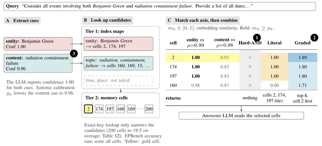
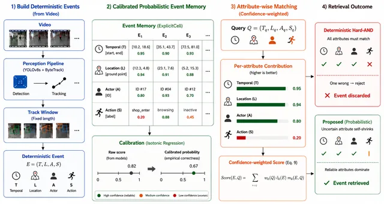
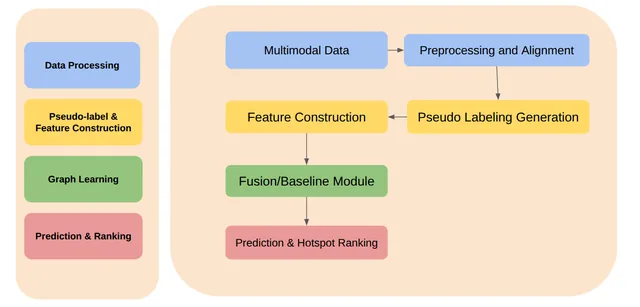
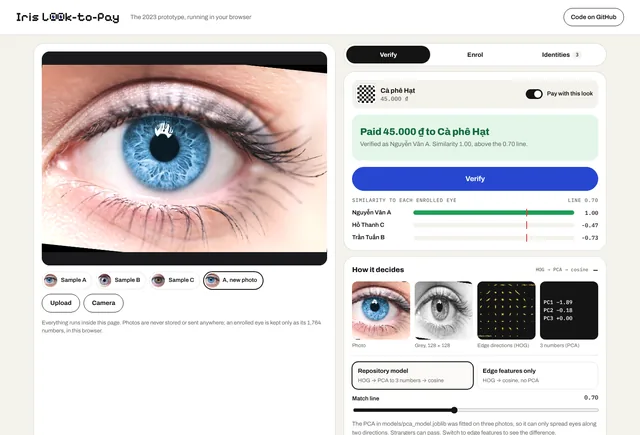
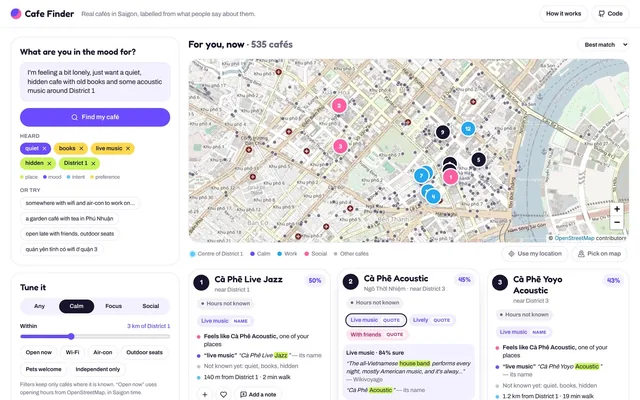

I am a Master of Research student in Industrial Engineering at Ho Chi Minh City University of Technology (HCMUT – VNU-HCM), a collaborative research assistant with Prof. Mo El-Haj at VinUniversity, and in parallel a second-degree student in Electronics and Telecommunications at the Posts and Telecommunications Institute of Technology.
My research asks how systems that perceive the world should act when their perception is uncertain. I work on uncertainty-aware perception for video, structured episodic memory for long-horizon video and language, and graph learning under sparse supervision, and I build interactive systems that run on these ideas. I am moving toward wearable and egocentric interaction, where a system has to decide from noisy signals whether to act, ask or wait.
I am looking for PhD positions in human–computer interaction and computer vision.
Publications
* equal contribution (co-first authors). Newest first.
-
COLING

What Makes Structured Episodic Retrieval Robust to Noisy Query Cues? A Controlled Study
Nhan Thanh Ho*, Anh Dong Nguyen*, Thuan Duc Tran*, Mo El-Haj
Under review at ACL Rolling Review (COLING 2027), 2026
Project page PDFAbstract
Structured memories for LLM agents index events by time, place, entity and topic, and answer a query by intersecting the matches on each axis. Intersection fails when an LLM extracts the events and the query cues, because one weak axis removes the right memory. We run a controlled study of retrieval rules on EPBench and LoCoMo. Hard intersection returns nothing for 63% of EPBench questions, and adding up the per-axis matches instead recovers most of the loss. How best to add them up depends on what the answer does with the retrieved set: routing questions to a selective rule recovers the retrieval loss. On LoCoMo, matching the speaker raises answer accuracy over dense retrieval by 7.9 points. All results carry paired bootstrap intervals, and our conclusions are limited to these two benchmarks. -
ACCV

Probabilistic Structured Event Modeling for Video Event Recognition under Perceptual Uncertainty
Nhan Thanh Ho*, Anh Dong Nguyen*, Thuan Duc Tran*, Thang Van Nguyen, Bui Anh Thinh, Nguyen Bao Tran, Long Nhat Ho
Asian Conference on Computer Vision (ACCV), 2026
Project page PDFAbstract
Long-duration video understanding systems summarize continuous observations as structured event representations to enable semantic retrieval. However, these events are produced by imperfect perceptual pipelines, meaning that every extracted attribute carries inherent uncertainty. This paper models structured events as probabilistic entities in which the correctness of each perceptual attribute is treated as a latent variable. A marginal-likelihood retrieval formulation integrates attribute-level uncertainty, allowing reliable attributes to compensate for uncertain ones instead of discarding an event after a single erroneous observation. For the spatial axis, detection covariance is propagated through the homography Jacobian to estimate uncertainty on the ground plane. Evaluated on an uncertainty-driven event retrieval benchmark using the indoor CAVIAR and outdoor VIRAT datasets, the framework consistently outperforms deterministic hard matching under increasing attribute noise, reaching 3.3× higher Recall@5 (0.394 vs. 0.120) at the highest corruption level.Bib
@inproceedings{ho2026probabilistic, title = {Probabilistic Structured Event Modeling for Video Event Recognition under Perceptual Uncertainty}, author = {Ho, Nhan Thanh and Nguyen, Anh Dong and Tran, Thuan Duc and Nguyen, Thang Van and {Bui Anh Thinh} and {Nguyen Bao Tran} and Ho, Long Nhat}, booktitle = {Asian Conference on Computer Vision (ACCV)}, year = {2026} } -
ICISN

24H-GNN: A Pattern-Driven Pseudo-Label Fusion Graph Network for City-Wide Traffic Flow Prediction
Thanh Nhan Ho*, Dong Anh Nguyen*, Minh Tai Pham Nguyen, Minh Khue Phan Tran, Hoang Minh Nguyen, Nguyen Bao Tran, Trong Nhan Le
International Conference on Intelligent Systems and Networks (ICISN), Lecture Notes in Networks and Systems, Springer, 2026
Project page PDFAbstract
Urban traffic flow prediction is essential for effective transportation management but remains challenging due to heterogeneous and spatially inconsistent data sources. We propose a pseudo-label fusion framework that integrates loop detector data and taxi GPS trajectories using spatio-temporal similarity. Graph neural networks (GNNs) are employed to model network dependencies, while an adaptive fusion strategy balances reliable sensor data and trajectory-based estimates. The proposed approach achieves strong hotspot detection performance (hotspot@50 = 0.92, hotspot@100 = 0.97) and consistently outperforms baseline models, particularly under limited supervision.Bib
@inproceedings{ho2026hgnn, title = {24H-GNN: A Pattern-Driven Pseudo-Label Fusion Graph Network for City-Wide Traffic Flow Prediction}, author = {Ho, Thanh Nhan and Nguyen, Dong Anh and Pham Nguyen, Minh Tai and Phan Tran, Minh Khue and Nguyen, Hoang Minh and {Nguyen Bao Tran} and Le, Trong Nhan}, booktitle = {International Conference on Intelligent Systems and Networks (ICISN)}, series = {Lecture Notes in Networks and Systems}, publisher = {Springer}, year = {2026} }
Projects
Personal projects with working demos and public code. Each has a write-up on my portfolio.

Iris Look-to-Pay · 2023
Iris verification for a look-to-pay interaction on smart glasses: HOG features, PCA and cosine matching with an explicit threshold, and refusals that explain themselves. Ported to the browser and checked against the Python original.

Cafe Finder · 2025
Personalised search over 1,441 real cafés in Ho Chi Minh City from OpenStreetMap. A bilingual labeller turns what people say into labels with evidence and confidence; ranking treats unknown as unknown, not as no. I designed the personalisation.
CV
Research experience
- Apr 2026 – nowCollaborative Research Assistant, VinUniversity · supervised by Prof. Mo El-Haj
- Probabilistic and structured memory representations for long-horizon video and language understanding under perceptual uncertainty (ACCV 2026; one paper under review).
- Jun 2026 – nowTechnical Research Team Lead, Provincial Science & Technology Initiative, Po Sah Inư · PI: Dr. Tran Duc Thuan
- A context-aware AI companion for visitors at the Po Sah Inư heritage site (Mũi Né): multimodal human–agent interaction, spatial context awareness, real-time conversational retrieval and a culturally grounded knowledge graph; prototyping, latency optimisation and field evaluation outdoors.
- Oct 2025 – Mar 2026Undergraduate Research Assistant, Advancing Computing Lab (ACLAB), HCMUT · supervised by Dr. Le Trong Nhan
- 24-hour spatio-temporal graph neural networks for city-wide traffic prediction (ICISN 2026).
Education
- Oct 2026 – nowMaster of Research in Industrial Engineering, Ho Chi Minh City University of Technology (HCMUT – VNU-HCM)
Thesis: An Explainable AI-Based Decision Support Framework for Maintenance Prioritization in Smart Manufacturing.
- Jun 2026 – nowB.Eng. in Electronics and Telecommunications Engineering (second degree), Posts and Telecommunications Institute of Technology
Embedded systems, signal processing, IMU and optical sensing, BLE, microcontrollers.
- Sep 2022 – Apr 2026B.Eng. in Industrial Management, Ho Chi Minh City University of Technology (HCMUT – VNU-HCM)
Operations research, systems engineering, probability and statistics, optimisation.
Honours and certificates
- 2025Outstanding Academic Performance, HCMUT – VNU-HCM, academic year 2024–2025 (semester GPA 3.8/4.0)
- 2026IELTS Academic, overall band 7.0
- 2024Google Business Intelligence and Google Data Analytics Specializations (Coursera)
Skills
- Programming
- Python, C++, Objective-C, TypeScript
- ML and vision
- PyTorch, TensorFlow, TensorRT, ONNX Runtime, OpenCV, Ultralytics YOLO, graph neural networks
- Hardware
- Arduino, Raspberry Pi, ESP32, IMU and optical sensors, BLE, prototyping
- Languages
- Vietnamese (native), English (C1; IELTS 7.0)